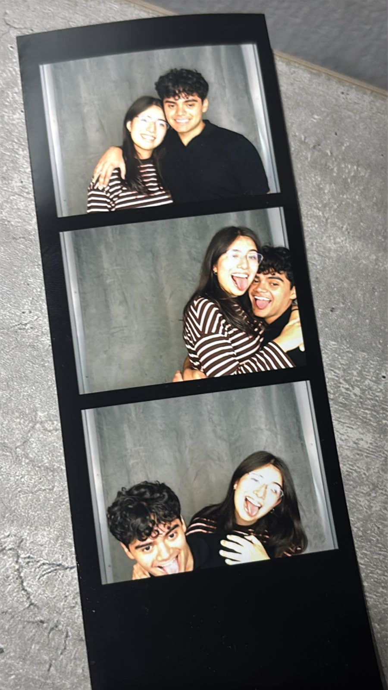

26 de julio de 2026
Aunque las estrellas se alineen una vez al año, siempre brillarán para ti.
365 días. Un año. ¿En qué momento podría haber llegado a pensar que la niña que conocí aquella primera vez se convertiría en alguien tan especial, en mi novia, y que un año a su lado me haría desear —y hacer todo lo posible— que lo nuestro fuera para siempre?
Parece que el tiempo simplemente se fue demasiado rápido, como si no hubiera tenido suficiente para agradecerte, cada día, lo mucho que me amaste y todo el amor que me permitiste darte.
En este punto me doy cuenta de lo mucho que hemos crecido, pero juntos; de todo lo que hemos aprendido y de todo lo que seguiremos aprendiendo. Porque, como dice el título de esta carta, siempre estaré para ti: en esos días, esas mañanas, esas noches y esos momentos en los que necesites a alguien; cuando necesites hablar, reír o simplemente sentirte amada.
Me llena por completo saber que, a estas alturas, no tengo ninguna duda de que te quiero para siempre. Y, aun así, me parece increíble pensar que, en el fondo, siempre fue así. Me gustaría entender cómo las circunstancias de la vida me llevaron hasta ti: si alguien escogió ese destino por nosotros o si simplemente fue casualidad.
Porque todo lo que hacemos y todo aquello en lo que coincidimos parece haber sido puesto ahí para que nos conociéramos. Cada día me doy más cuenta de que estamos hechos el uno para el otro.
Sé perfectamente que hoy no me imagino qué sería de mí sin ti. Eres alguien que me ha ayudado muchísimo a crecer, a entenderme y, especialmente, me ha enseñado a amarte. Porque, cuando pienso en ti, siento esa necesidad de darte lo mejor de mí, de ayudarte a cumplir tus sueños, de acompañarte y apoyarte siempre. No para que me ames por eso, sino simplemente porque quiero verte feliz.
Puede que ya haya pasado un año; puede que hayamos crecido, aprendido y reído muchísimo. Pero me hace muy feliz saber que todavía falta mucho más por vivir. Mi sueño es que seas mi familia, la persona junto a quien despierte cada mañana, mi equipo y la mujer de mi vida.
Mi corazón te pertenece y te aseguro que seguirá amándote a pesar de cualquier obstáculo y cualquier adversidad que se nos atraviese, porque YO TE AMO A TI Y SOLO A TI.

Gracias por este año, ratis, lleno de aprendizajes. Gracias por ser la mejor novia del mundo, mi mejor amiga y mi familia.
No sabes con cuántas ansias pienso en nuestro futuro y en todo lo nuevo que viviremos juntos. JUNTOS. NUESTRO EQUIPO.
Att. Tu novio ratis, que te ama más que tú —y se sabe—.
Por siempre.